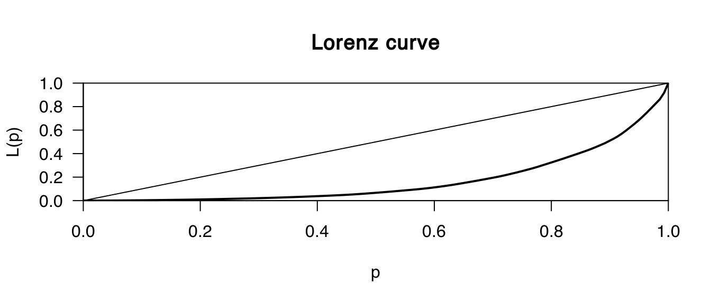

atlant <- read.csv(
"downloads/r-tut/data/AtlantData1.csv",
sep = "\t",
header = TRUE)head(atlant)## site X Y archont feature object class sherd qty wt
## 1 A 472564 3939619 Atlas surface K G 1 524
## 2 A 472564 3939619 Atlas 1 2 K G 1 2000
## 3 A 472564 3939619 Atlas 1 -1,2:2 K R 1 67
## 4 A 472564 3939619 Atlas 1 3, -1-3-1:3 K R 1 642
## 5 A 472564 3939619 Atlas 1 2, -1:2 K G 1 991
## 6 A 472564 3939619 Atlas 1 -1:4, -2:4 K G 1 1997
## size wall muendungsD muendungsH minD minD_H maxD maxD_H bodenD
## 1 200 NA 17.0 9.0 NA NA 16 2.5 0
## 2 500 6 27.5 21.0 23.5 17.0 27 8.5 0
## 3 120 7 21.0 13.0 18.5 11.5 19 11.0 NA
## 4 500 8 29.0 16.0 23.5 11.0 25 8.0 NA
## 5 500 8 23.5 8.5 NA NA 24 3.0 0
## 6 500 7 35.0 15.5 34.0 14.0 NA NA 0
## temperSize vesselShape
## 1 S1a
## 2 C S3a
## 3 M S2c
## 4 C S3b
## 5 C S2g
## 6 VF S8amin(atlant$muendungsD)## [1] NABei Variablen mit NaN muss dies R mitgeteilt werden!
min(atlant$muendungsD, na.rm = TRUE)## [1] 5max(atlant$muendungsD, na.rm = TRUE)## [1] 35mean(atlant$wt)## [1] 395.3333median(atlant$wt)## [1] 153.5Eine wichtige Eigenschaft des Medians ist Robustheit gegenüber Ausreißern!
summary(atlant$wt)## Min. 1st Qu. Median Mean 3rd Qu. Max.
## 6.0 44.0 153.5 395.3 501.5 4500.0Spannweite
max(atlant$wt) - min(atlant$wt)## [1] 4494Varianz
var(atlant$wt)## [1] 392716.4Standardabweichung
sd(atlant$wt)## [1] 626.6709!!! R Funktionen beruhen auf der korrigierten Stichprobenvarianz !!!
var(atlant$wt)## [1] 392716.4empirische Varianz
\[ var(x) = \frac{\sum_{i = 1}^n (x_{i} - \bar{x})^2}{n}\]
(sum( (atlant$wt - mean(atlant$wt) ) ^2) )/(length(atlant$wt) )## [1] 389870.6Gini-Koeffizient aus der Lorenz-Kurve (Paket: ineq)
ineq(atlant$wt,type="Gini")## [1] 0.65801980 = gleichmäßigen Verteilung, 1 = maximaler Ungleichverteilung
plot(Lc(atlant$wt))
t.test(atlant$wt)##
## One Sample t-test
##
## data: atlant$wt
## t = 7.4108, df = 137, p-value = 1.171e-11
## alternative hypothesis: true mean is not equal to 0
## 95 percent confidence interval:
## 289.8458 500.8209
## sample estimates:
## mean of x
## 395.3333head(a, n = 3)## 30 70 120 200 500
## A 0 0 1 2 5
## B 0 0 0 2 2
## C 0 1 2 0 1chisq.test(a)## Warning in chisq.test(a): Chi-squared approximation may be incorrect##
## Pearson's Chi-squared test
##
## data: a
## X-squared = 58.35, df = 28, p-value = 0.0006588